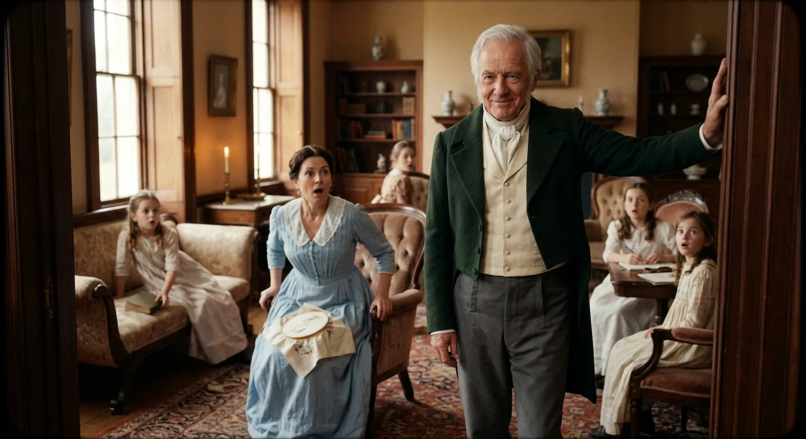
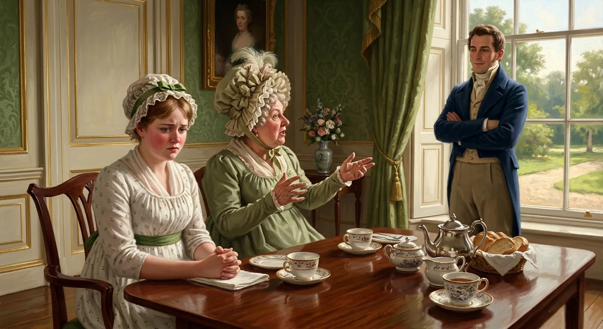
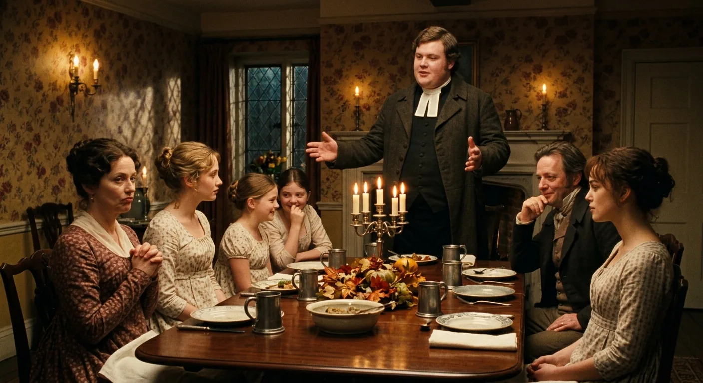
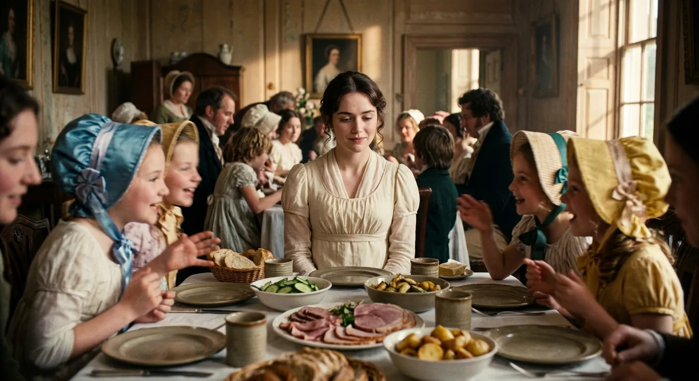

A Rich Bachelor Arrives at Netherfield
It is a truth universally acknowledged in the English countryside that any gentleman of considerable means who ventures into a new neighbourhood will find himself regarded with the keenest matrimonial interest by every family blessed—or burdened—with unmarried daughters. Such a man's own opinions on the matter of marriage are entirely beside the point; society has already determined his fate before he has so much as unpacked his trunks.
This immutable law of social nature sets into motion the domestic comedy at Longbourn, where Mrs. Bennet bursts upon her husband with news of tremendous import: Netherfield Park, that fine estate which has stood empty far too long, has at last found a tenant. The intelligence comes courtesy of Mrs. Long, and Mrs. Bennet wastes not a moment in laying the particulars before Mr. Bennet—though he has expressed no curiosity whatsoever in the matter. The new arrival, a Mr. Bingley, is young, single, and possessed of four or five thousand pounds a year. In Mrs. Bennet's estimation, this constitutes nothing less than a providential gift to her family of five unmarried daughters.
What follows is a masterful exchange between husband and wife, a verbal dance that reveals everything essential about their characters. Mrs. Bennet implores, cajoles, and very nearly demands that Mr. Bennet pay the customary first visit to their new neighbour—for without this social formality, she and her girls cannot properly make Mr. Bingley's acquaintance. Mr. Bennet, for his part, deflects her entreaties with practiced ease and no small degree of mischief, suggesting at one turn that Mrs. Bennet herself might catch the young man's eye, and at another offering to send his written blessing for Bingley to marry whichever daughter he fancies.
Throughout this sparring, Mr. Bennet reveals a particular fondness for his daughter Lizzy, praising her quickness of mind—a preference that Mrs. Bennet immediately contests, championing Jane's superior beauty and Lydia's agreeable temper instead. When Mrs. Bennet invokes her poor nerves, that familiar refrain of twenty years' standing, her husband meets the complaint with dry wit, claiming those nerves as old and respected friends.
The chapter closes with a portrait of this ill-matched pair: Mr. Bennet, a gentleman of sharp intellect and satirical disposition, whose true nature remains a mystery to his wife even after three-and-twenty years of marriage; and Mrs. Bennet, a woman of limited understanding whose singular purpose in life is seeing her daughters advantageously wed, and whose chief comforts lie in neighbourhood gossip and social calls.
Thus the stage is set, the players introduced, and the arrival of the wealthy Mr. Bingley promises to disturb the peace of the countryside in ways both amusing and consequential.

Mr. Bennet's Secret Visit Revealed
Mr. Bennet proved himself a man who delighted in quiet sport at his family's expense, having kept his own counsel regarding the matter of Mr. Bingley until the precise moment when revelation would produce the greatest effect. Though he had assured Mrs. Bennet repeatedly that he should not call upon their new neighbour—indeed, had maintained this position with such steadfastness that his wife had quite despaired of the introduction ever taking place—he had, in fact, been among the very first gentlemen of the neighbourhood to pay his respects.
The disclosure came about with characteristic cunning. Observing Elizabeth at work trimming a hat, Mr. Bennet remarked with studied casualness that he hoped Mr. Bingley would like it. His wife, still nursing her grievances on the subject, could not resist the opportunity to lament their supposed exclusion from the gentleman's acquaintance. Elizabeth offered the sensible observation that they might meet him at the assemblies through Mrs. Long's introduction, but this served only to draw Mrs. Bennet's ire toward that lady, whom she denounced as selfish and hypocritical—a woman with two nieces of her own to consider.
The conversation wound its way through Kitty's ill-timed coughing, which her mother declared an assault upon her nerves and her father observed was poorly scheduled, to the matter of the upcoming ball a fortnight hence. Mr. Bennet continued his teasing, suggesting that Mrs. Bennet might introduce Mr. Bingley to Mrs. Long rather than the reverse, and when his wife protested the impossibility of introducing a man with whom she was unacquainted, he delivered his stroke with masterful timing—offering to perform the office himself.
The ladies could only stare. Mrs. Bennet's dismissive cry of "Nonsense!" prompted her husband to elaborate further, even drawing poor Mary into the discourse, though that young lady of deep reflection found herself unable to produce anything sufficiently sensible to contribute. At last, when Mrs. Bennet declared herself sick of Mr. Bingley altogether, Mr. Bennet revealed the truth: he had called upon the gentleman that very morning, and they could not now escape the acquaintance.
The effect was everything Mr. Bennet could have wished. Mrs. Bennet's astonishment transformed swiftly into raptures, and she soon convinced herself that her persuasion had brought about her husband's compliance all along. Mr. Bennet, thoroughly fatigued by his wife's effusions, granted Kitty permission to cough as freely as she liked and quitted the room, leaving Mrs. Bennet to praise his excellence as a father and to assure young Lydia that Mr. Bingley would certainly dance with her at the next ball—a prospect that troubled Lydia not at all, for though she was the youngest, she was also the tallest.
The remainder of the evening passed in eager speculation about when Mr. Bingley might return the visit and when the family might contrive to have him to dinner.
The rest is waiting.
58 illustrated classics. Cinematic, anime, and kids editions. $4.99 a month — about the price of a coffee.
First Impressions at the Assembly Ball
Subscribe to read this chapter.
Sisters Reflect on Character and Fortune
Subscribe to read this chapter.
Neighbors Dissect the Ball's Events
Subscribe to read this chapter.
Guarded Hearts and Shifting Glances
Subscribe to read this chapter.
Officers, Entails, and a Fateful Invitation
Subscribe to read this chapter.
Mud, Manners, and Fine Eyes
Subscribe to read this chapter.

Mrs. Bennet's Triumphant Visit to Netherfield
Subscribe to read this chapter.
Wit and Words in the Drawing Room
Subscribe to read this chapter.
An Evening of Artful Pursuits
Subscribe to read this chapter.
Departures and Guarded Hearts
Subscribe to read this chapter.

The Arrival of Mr. Collins
Subscribe to read this chapter.
Mr. Collins Praises His Noble Patroness
Subscribe to read this chapter.
Mr Collins Shifts His Sights to Elizabeth
Subscribe to read this chapter.
Wickham's Charming Revelations Begin
Subscribe to read this chapter.
Jane's Generous Doubt and Dancing Plans
Subscribe to read this chapter.
Sparring Steps at the Netherfield Ball
Subscribe to read this chapter.
Mr. Collins Proposes with Methodical Certainty
Subscribe to read this chapter.
A Father's Wry Ultimatum
Subscribe to read this chapter.
A Letter Shatters Jane's Hopes
Subscribe to read this chapter.
Charlotte's Calculated Pursuit of Security
Subscribe to read this chapter.
Mrs. Bennet's Unending Resentment
Subscribe to read this chapter.
Hope Extinguished, Sisters Consoling
Subscribe to read this chapter.
The Gardiners Bring Comfort and Counsel
Subscribe to read this chapter.
Farewells and Fading Intimacies
Subscribe to read this chapter.
Departures and Lingering Attachments
Subscribe to read this chapter.
Arrival at Hunsford Parsonage
Subscribe to read this chapter.
An Audience with Lady Catherine
Subscribe to read this chapter.
Charlotte's Quiet Strategy at Hunsford
Subscribe to read this chapter.
Sparring at the Pianoforte
Subscribe to read this chapter.
Awkward Silences and Hidden Intentions
Subscribe to read this chapter.
Unexpected Encounters and Revealing Conversations
Subscribe to read this chapter.
A Most Unwelcome Proposal
Subscribe to read this chapter.
A Letter Demands Her Justice
Subscribe to read this chapter.
Prejudice Shattered by Painful Truth
Subscribe to read this chapter.
Unpleasant Recollections and Solitary Walks
Subscribe to read this chapter.
Farewells and Secrets to Keep
Subscribe to read this chapter.

Lydia's Frivolous Homecoming
Subscribe to read this chapter.
Sisters Share Shocking Secrets
Subscribe to read this chapter.
Lydia's Brighton Invitation Sparks Warning
Subscribe to read this chapter.
A Marriage's Lessons in Disappointment
Subscribe to read this chapter.
Pemberley Reveals Its Master's True Nature
Subscribe to read this chapter.
An Unexpected Visit at Lambton
Subscribe to read this chapter.
An Awkward Visit to Pemberley
Subscribe to read this chapter.
Lydia's Disgrace Revealed
Subscribe to read this chapter.
Doubt, Fear, and Wickham's True Character
Subscribe to read this chapter.
Whispers of Wickham's Wickedness Spread
Subscribe to read this chapter.
A Marriage Bargained and Bought
Subscribe to read this chapter.
A Father's Regret and Resolve
Subscribe to read this chapter.
Lydia Returns Unashamed and Triumphant
Subscribe to read this chapter.
Darcy's Secret Role Revealed
Subscribe to read this chapter.
Bingley's Return Stirs Old Hopes
Subscribe to read this chapter.
Teasing Silence and Uncertain Hearts
Subscribe to read this chapter.
Mrs. Bennet's Schemes Bear Fruit
Subscribe to read this chapter.
Lady Catherine's Unwelcome Demand
Subscribe to read this chapter.
Lady Catherine's Shadow Over Netherfield
Subscribe to read this chapter.
A Walk Toward Understanding
Subscribe to read this chapter.
Confessions Between Sisters at Midnight
Subscribe to read this chapter.
Love's Beginnings and Lady Catherine's Usefulness
Subscribe to read this chapter.
Settled Fates and Family Fortunes
Subscribe to read this chapter.